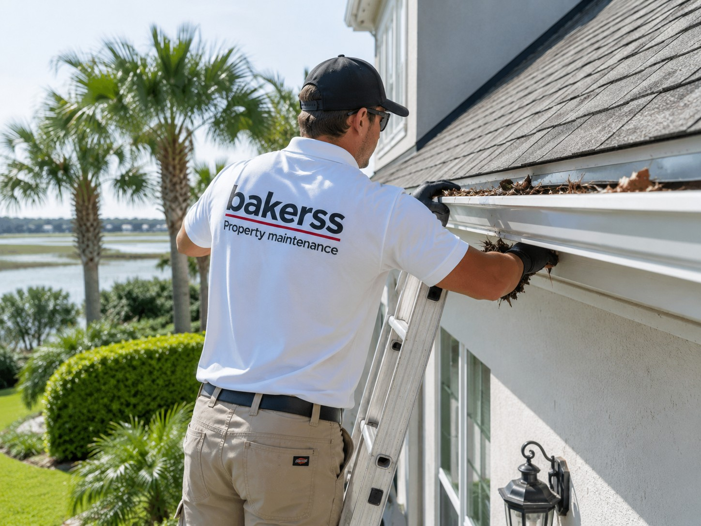

Gutter Cleaning in Myrtle Beach, Murrells Inlet & Horry County, SC
Professional gutter cleaning, flushing, and inspection for coastal homes. Pine needle buildup, hurricane debris, and Horry County storm seasons make clean gutters essential property protection.

Silo: Exterior Maintenance
Gutter Cleaning for Coastal Horry County Properties
Gutters clog fast in coastal Horry County. Live oak leaves, long-needle pine debris, Spanish moss, and seasonal storm material pack gutters quickly — and blocked gutters on coastal homes cause serious water damage. Salt-air deterioration accelerates gutter wear, and Myrtle Beach's hurricane season creates concentrated debris events that overwhelm neglected systems.
Bakerss provides gutter cleaning and flushing for homes, vacation rentals, and investment properties across the Grand Strand. We clean, flush, and inspect gutters so your property's water management system is performing when it rains — which in coastal South Carolina, happens often and hard.
What Our Gutter Cleaning Service Includes
- ✓ Full gutter debris removal by hand
- ✓ Downspout flushing and blockage clearing
- ✓ Gutter flow testing and visual inspection
- ✓ Identification of sags, separations, or damage
- ✓ Pine needle and Spanish moss removal
- ✓ Post-storm gutter debris clearing
- ✓ Roof edge and fascia inspection
- ✓ Cleanup of all debris from ground below
Coastal Considerations in Horry County
- ✓ Pine needle buildup — Horry County's longleaf and loblolly pines drop needles continuously, packing gutters faster than leaf debris
- ✓ Hurricane debris — storm season deposits concentrated organic material in gutters, requiring post-event cleaning
- ✓ Salt-air corrosion — aluminum gutters near the coast deteriorate faster; regular inspection catches problems early
- ✓ High rainfall — coastal SC receives 50+ inches of rain annually; blocked gutters cause fascia rot and foundation issues
Combine Gutter Cleaning With These Exterior Services
Keep your property completely maintained with these complementary services — all from one vendor:
🌿 Lawn Care
Bundle gutter cleaning with lawn mowing — one visit handles your entire exterior.
View Lawn Care →💧 Pressure Washing
Combine gutter cleaning with driveway and patio pressure washing for complete exterior maintenance.
View Pressure Washing →🌱 Landscaping
Schedule gutter cleaning alongside landscape maintenance for efficient full-exterior service.
View Landscaping →✂️ Bush Trimming
Pair gutter cleaning with hedge trimming — one team, complete exterior care.
View Bush Trimming →Gutter Cleaning by Location
Gutter Cleaning Across Horry County — By City
Gutter Cleaning in Myrtle Beach, SC
Myrtle Beach homes and vacation rentals sit under heavy live oak and pine canopy that fills gutters rapidly. Semi-annual professional cleaning is the standard for property protection in this market.
Myrtle Beach Services →Gutter Cleaning in Murrells Inlet, SC
Murrells Inlet's waterfront and marsh-adjacent properties face accelerated debris accumulation and moisture exposure — making gutter maintenance especially important for protecting fascia and foundation.
Murrells Inlet Services →Gutter Cleaning in Surfside Beach, SC
Surfside Beach homes experience the same coastal debris load as Myrtle Beach. We provide reliable gutter cleaning on schedules that keep drainage systems flowing through storm season.
Surfside Beach Services →Gutter Cleaning in Garden City, SC
Garden City oceanfront homes are exposed to heavy wind-driven debris and accelerated salt-air wear on aluminum gutters. We clean and inspect gutters to catch corrosion early.
Garden City Services →Gutter Cleaning in Horry County, SC
All of Horry County benefits from professional gutter cleaning — from inland homes to beachfront properties, we handle the full service area with one trusted team.
Horry County Services →Common Questions
Gutter Cleaning FAQ — Myrtle Beach & Horry County
Get Gutter Cleaning in Myrtle Beach Starting at $125
Serving Myrtle Beach, Murrells Inlet, Surfside Beach, Garden City, and all of Horry County. Storm preparation, pine needle removal, and year-round protection.